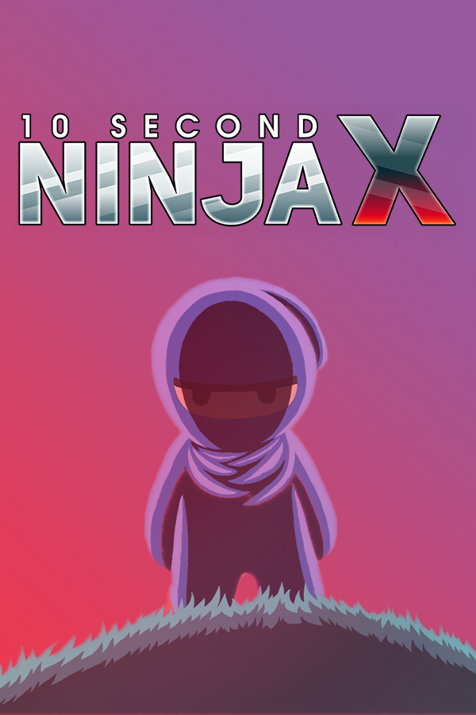

10 Second Ninja X
10 Second Ninja X
Details
|  | |
| Playtime | Not Played |
| Last Activity | Never |
| Added | 2/22/2021 21:14:28 |
| Modified | 10/30/2021 0:51:43 |
| Completion Status | Not Played |
| Library | Amazon Games |
| Source | Amazon |
| Platform | PC (Windows) |
| Release Date | 7/19/2016 |
| Community Score | 65 |
| Critic Score | 77 |
| User Score | |
| Genre | Arcade Indie Platform Puzzle |
| Developer | Four Circle Interactive |
| Publisher | Curve Digital |
| Feature | Single Player |
| Links | Official Website Steam Wikipedia |
| Tag | |
Description
10 SECOND NINJA X is a shockingly fast, overwhelmingly intense action/puzzle game. In this thumb blistering sequel, the nefarious Captain Greatbeard has kidnapped you and trapped your forest friends inside of his army of robots like some kind of psychopath. Greatbeard doesn't think you're the fastest ninja who ever lived - he is WRONG. Destroy all of Greatbeard's robots in each level in ten seconds or less. Be fast enough to get the coveted three star rating in each. Fight through 100 levels, explore Greatbeard's airship, discover secrets, climb the leaderboards and show everyone what it means to be THE FASTEST, COOLEST HERO EVER.

⦁ 100 thumb blistering, mind bending levels over 11 game worlds
⦁ 11 “Marathon Modes” with back to back ninja madness
⦁ Player ghosts and unlockable ghost hints for the trickier levels!
⦁ Explore the magnificent Greatbeard's ship in the retro styled hub.
⦁ Online leaderboards for every level!
⦁ Hidden minigames - with a 100% chance of Nun themed mayhem.
⦁ 8 different character costumes to unlock and play

"10 Second Ninja X is slick, quick and compulsive" - Telegraph, ⅘
"Sprinkled with humour, colour, and secrets to uncover, this action platformer is an addictive little time-waster " - God is a Geek, 9/10
"A great sequel... It offers smooth gameplay, great characters, and strong reasons to keep coming back." - XboxOne UK, 9/10
"The developers get what's important and give it to you in spades" - NoobGrind, 8.7/10
"It's super easy to lose a lot of time replaying levels and not even notice" - LETSPLAYVIDEOGAMES, 8/10

10 Second Ninja X has full Steam trading card support - with loads of cards to collect.
⦁ 100 thumb blistering, mind bending levels over 11 game worlds
⦁ 11 “Marathon Modes” with back to back ninja madness
⦁ Player ghosts and unlockable ghost hints for the trickier levels!
⦁ Explore the magnificent Greatbeard's ship in the retro styled hub.
⦁ Online leaderboards for every level!
⦁ Hidden minigames - with a 100% chance of Nun themed mayhem.
⦁ 8 different character costumes to unlock and play
"10 Second Ninja X is slick, quick and compulsive" - Telegraph, ⅘
"Sprinkled with humour, colour, and secrets to uncover, this action platformer is an addictive little time-waster " - God is a Geek, 9/10
"A great sequel... It offers smooth gameplay, great characters, and strong reasons to keep coming back." - XboxOne UK, 9/10
"The developers get what's important and give it to you in spades" - NoobGrind, 8.7/10
"It's super easy to lose a lot of time replaying levels and not even notice" - LETSPLAYVIDEOGAMES, 8/10
10 Second Ninja X has full Steam trading card support - with loads of cards to collect.